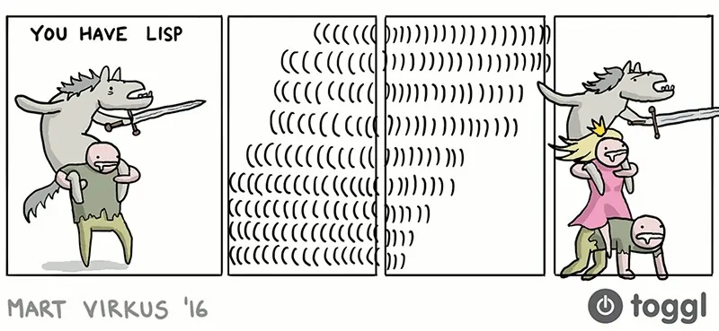

Figura 1: Fonte: Toggl.com
Minhas aulas voltaram. E com isso, alguns dos meus planos (como acelerar minhas leituras e meus estudos independentes) acabaram ficando em segundo plano. Infelizmente, existem momentos em que a faculdade pode ser a primeira a nos prejudicar nos estudos que realmente sejam interessantes.
Lamentações irrisórias à parte, pretendo dar continuidade ao que
discuti no meu último post, em comemoração à versão 0.2.0 da
linguagem que estou projetando: Majestic Lisp. Aqui, vou tentar falar
de forma leve (ou talvez não tanto…) de alguns recursos novos da
mesma.
Lembrando que o desenvolvimento de Majestic Lisp opera sobre cinco preceitos básicos que já discuti anteriormente também, e que aqui resumo com muita brevidade:
- Performance não é um objetivo central, ainda que seja bem-vinda;
- A implementação almeja ser didática;
- A linguagem não surpreende veteranos de Lisp e não tem novidades demais;
- A obra (livro-texto + linguagem) deve mostrar a criação de uma linguagem e de um interpretador como sendo atividades tangíveis;
- A linguagem poderá ser usada algebricamente, inclusive com escrita à mão.
Lembro, também, que aqui usarei uma notação que simula um REPL. Dessa forma, ficará simples acompanhar o que está sendo digitado pelo usuário e o que o mesmo receberá na tela como resposta. Um exemplo:
> entrada do usuário resposta do interpretador > entrada do usuário com múltiplas linhas resposta do interpretador
Condicionais
Majestic Lisp segue, em geral, algumas orientações sintáticas providas por Common Lisp, Scheme e Clojure, no que tange a sintaxe. Por esse motivo, suas condicionais – estruturas de controle de fluxo, presentes na maioria das linguagens – não são nenhuma surpresa.
O primeiro tipo de condicional é uma forma especial, chamada
if1. Essa forma é escrita como se fosse uma quádrupla, com a
seguinte sintaxe geral:
(if <condição> <consequência> <alternativa>)
Assim, podemos por exemplo testar pela nulidade de um elemento e fazer algo diferente quando esse elemento é ou não é nulo:
> (defn with-one (x)
(if (nilp x)
(cons 0 1)
(cons x 1)))
with-one
> (with-one nil)
(0 . 1)
> (with-one 5)
(5 . 1)
Outro tipo de condicional é a forma cond, que também pode ser
implementada com um macro (veremos isso posteriormente). Vejamos uma
implementação (bastante redundante) da função abs, que retorna o valor
absoluto de um número:
> (defn abs (x)
(cond ((= x 0) 0)
((> x 0) x)
(t (- x))))
abs
> (abs 0)
0
> (abs 5)
5
> (abs -5)
5
cond possui uma sintaxe diferente, feita especialmente para situações
onde apenas um predicado e uma alternativa não sejam suficientes.
Aqui temos uma condição com três cláusulas: quando x é igual a zero,
quando x é maior que zero, e quando x é menor que zero.
Na primeira situação – definida pelo predicado (= x 0) –, retornamos
o valor 0.
Na segunda situação – definida pelo predicado (> x 0) –, retornamos
integralmente o valor de x.
A terceira situação representa o único caso alternativo possível: x
ser menor que zero. Por isso, podemos simplesmente cortar um atalho e
garantir que a consequência para essa situação sempre ocorra, caso ela
seja executada: assim, seu predicado será t, o símbolo principal para
a ideia de verdade. Em cond, t funcionará de forma similar ao else de
outras linguagens de programação.
A título de curiosidade, eis uma forma melhor de programar abs:
> (defn abs (x)
(if (< x 0)
(- x)
x))
abs
Quasiquoting
Anteriormente, comentamos a ideia de quoting, existente na maioria dos Lisps. No caso especial de uma lista que estiver quotada, isso significará que essa lista será inteiramente tratada como dados pelo interpretador, e não será analisada para detecção de forma especial, macro, função, ou nada parecido.
> (+ 1 2) 3 > '(+ 1 2) (+ 1 2)
Todavia, há uma forma muito vantajosa de construir dados diretamente no programa: o quasiquoting. Esse recurso é especialmente interessante quando estivermos declarando macros.
Uma lista quasiquotada é precedida por um acento grave (`), ao invés
do apóstrofo que simboliza o quote ('). Tudo nessa lista procederá da
mesma forma como funcionaria para uma lista quotada, exceto para
elementos marcados com caracteres especiais.
Esses caracteres especiais determinam que apenas aqueles elementos sejam interpretados, e seus resultados serão substituídos na lista gerada.
Há duas formas de realizar essa substituição: inserir diretamente o
valor de retorno – usando o símbolo de unquote (,) –, ou enfileirar
os elementos da lista retornada – usando o símbolo unquote list (,@).
Vejamos a função a seguir. Ela toma um símbolo como parâmetro, e
retorna uma lista com os símbolos good, morning, e o símbolo
fornecido.
> (defn hello (name-sym)
(list 'good 'morning name-sym))
hello
> (hello 'lucas)
(good morning lucas)
Podemos evitar o uso da função list, e também evitar quotar símbolos
individuais, através do uso de quasiquote e unquote:
> (defn hello (name-sym)
`(good morning ,name-sym))
hello
> (hello 'lucas)
(good morning lucas)
"Mas e se eu quisesse informar o nome completo do usuário?"
Bem, há várias formas de fazermos isso. Uma delas é assumir que o que está sendo passado para nós, na função, seja uma lista; assim, podemos simplesmente colocar ordenadamente o conteúdo dessa lista em nosso quasiquote.
> (defn full-hello (names)
`(good morning ,@names and have a nice day))
full-hello
> (full-hello '(lucas vieira))
(good morning lucas vieira and have a nice day)
Podemos combinar o comportamento de nossas duas funções em apenas uma. Assim teremos alguma versatilidade. Para isso, usaremos condicionais:
> (defn hello (name)
(if (consp name)
`(good morning and have a nice day ,@name)
`(good morning ,name)))
hello
> (hello 'lucas)
(good morning lucas)
> (hello '(lucas vieira))
(good morning and have a nice day lucas vieira)
Macros
Podemos usufruir do quasiquote para definir macros, que nada mais são que funções que transformam o que foi escrito em outra coisa, antes de esse resultado ser interpretado.
Isso justifica, por exemplo, o fato de uma função como essa:
> (defn square (x)
(* x x))
square
ser, na realidade, definida dessa forma, por baixo dos panos:
> (def square
(fn (x) (* x x)))
square
O que ocorre é que defn em si é um macro, responsável por transformar
uma sintaxe como
(defn <nome> <lambda-list> <expressão>)
em
(def <nome> (fn <lambda-list> <expressão>))
Mas veja: esse é praticamente um uso direto de um quasiquote! Com base
nisso, podemos definir um possível macro para defn, usando a forma
defmac:
> (defmac defn (name lambda-list expr)
`(def ,name (fn ,lambda-list ,expr)))
defn
De fato, até mesmo a forma defmac é, na realidade, um macro. Majestic
Lisp define defmac da seguinte forma:
> (def defmac
(mac (name lambda-list expr)
`(def ,name (mac ,lambda-list ,expr))))
defmac
A forma especial mac cria um objeto de macro no runtime de Majestic
Lisp, que não é muito diferente de uma função – de fato, macros são
um tipo especial de função. A diferença é que um macro não poderia,
por exemplo, ser aplicado diretamente a parâmetros através da forma
apply, como se fosse uma função propriamente dita.
Se você precisa verificar como um macro se comporta através do REPL,
poderá usar funções como macroexpand e macroexpand-1, como demonstrei
no último post.
> (macroexpand-1 '(defmac defn (name lambda-list expr)
`(def ,name (fn ,lambda-list ,expr))))
(def defn
(mac (name lambda-list body)
`(def ,name (fn ,lambda-list ,expr))))
Desestruturação em funções
Majestic Lisp possui uma pequena diferença na declaração de suas funções, o que pode ser também algo extremamente conveniente do ponto de vista de linguagem. Vejamos a função a seguir:
> (defn show-first (lst)
(if (nilp lst)
'(no elements)
`(the first element is ,(car lst))))
show-first
> (show-first '(1 2 3))
(the first element is 1)
> (show-first nil)
(no elements)
A função show-first recebe uma lista como parâmetro e discrimina qual
é o primeiro elemento dessa lista. Caso seja nula, também retorna uma
lista de símbolos afirmando esse fato.
Existe uma inconveniência nessa função, relacionada ao uso do que
normalmente chamamos de sintaxe concreta: ela envolve o uso de funções
como car, cdr, cadr, cddr… para desestruturar listas em seu corpo.
Majestic Lisp fornece nomes alternativos para essas funções (first,
rest, second, rest-of-second…) mas à medida que o programa for
crescendo, usar uma sintaxe como essa pode virar poluição visual muito
rapidamente.
Por isso, listas de parâmetros de funções têm a capacidade de desestruturar listas que sejam recebidas por parâmetro. Isso pode ser feito através da declaração de sublistas (pontuadas ou não) na lista de parâmetros da função.
A desestruturação de uma lista adequada2 nunca falha, uma vez que
deriva a sintaxe concreta anteriormente descrita, por baixo dos panos
(por exemplo, car e cdr de uma lista vazia continua sendo uma lista
vazia). Assim, desestruturar não envolve checagem por nulidade, por
exemplo, mas falhará se o argumento em questão for um átomo, e não uma
lista.
Vamos reescrever show-first, desestruturando a lista recebida por
parâmetro:
> (defn show-first ((x . xs))
(if (nilp x)
'(no elements)
`(the first element is ,x)))
show-first
Na definição acima, não existe mais a variável lst no escopo da função
show-first. Ao invés disso, temos a variável x, ligada ao primeiro
elemento da lista (car); os demais elementos da lista (cdr) são
ligados a uma outra lista, que aqui chamamos de xs.
Essa ideia de desestruturação é tão útil que é também utilizada na
definição do macro let, que veremos a seguir.
Variáveis locais
Há situações onde declarar uma variável global, através da forma def,
não seja algo tão pertinente. Nessas situações, podemos criar escopos
onde certas variáveis irão assumir os valores que demos a elas.
Para criarmos esses escopos, basta usarmos o macro let3:
> (let ((x 1)
(y 2))
(+ x y))
3
O macro let possui uma sintaxe similar à forma como é definido nas
linguagens Common Lisp e Scheme:
(let <lista-de-definições> <expressão>)
Onde a <lista-de-definições> possui a forma
(<variável1> <valor1>) (<variável2> <valor2>) ... (<variávelN> <valorN>)
let permite a declaração de qualquer número de variáveis, sendo os
valores atribulados a um contexto que, após a execução de <expressão>,
não será mais diretamente acessível… com algumas ressalvas.
Adicionalmente, let também permite "sobrescrever temporariamente" uma
ou mais variáveis globais, redefinindo-as de tal forma que a
redefinição deixe de valer após a execução do let. Na literatura,
damos a isso o nome de sombreamento (shadowing).
> (def x 5)
x
> x
5
> (let ((x 6))
x)
6
> x
5
Implementação do macro let
O macro let é implementado de uma forma relativamente elegante.
A princípio, a única estrutura de Majestic Lisp que poderia criar um
escopo temporário para variáveis é a função. let se aproveita disso
para declarar e aplicar uma função por baixo dos panos, criando
realmente um escopo.
Eis a implementação de let em código:
(defn sep-pairs (pairs syms vals)
(if (nilp pairs)
(list syms vals)
(sep-pairs (cdr pairs)
(cons (caar pairs) syms)
(cons (car (cdar pairs))
vals))))
(defmac let (args body)
((fn ((syms vals))
`((fn ,syms ,body)
,@vals))
(sep-pairs args nil nil)))
A função sep-pairs usa sintaxe concreta por pura conveniência,
portanto não convém explicar a fundo. Basicamente, ela toma uma lista
na forma
((x1 v1) (x2 v2) ... (xn vn))
e transforma-a em uma lista como
((xn .. x2 x1) (vn ... v2 v1))
O macro let utiliza-se dessa lista retornada por sep-pairs,
desestrutura-a, e então cria uma aplicação de função similar a esse
pseudocódigo:
((fn (xn .. x2 x1) <corpo-do-let>) vn ... v2 v1)
Em outras palavras, o let na verdade é uma aplicação de função anônima
onde os nomes das variáveis são os parâmetros, e os valores das
variáveis são os valores aos quais a função é aplicada. O que é
colocado para ser executado no let nada mais é que o corpo dessa
função anônima, declarada por baixo dos panos.
Captura de escopo
Como let usa uma função para criar um escopo, isso significa que
aquela função, tal como qualquer outra função declarada em Majestic
Lisp, possui um contexto léxico, onde as variáveis pertencentes a seu
escopo estão declaradas.
Se uma nova função for declarada enquanto esse contexto existir, esse
contexto será capturado. Isso significa que certos valores podem
perdurar fora de funções ou do macro let, desde que sejam reutilizados
em uma função ali declarada.
Vejamos uma implementação (mais redundante) para a função 1+, que soma
1 a um número passado por parâmetro:
> (def 1+
(let ((x 1))
(fn (y) (+ x y))))
1+
> (1+ 5)
6
A função 1+ é exatamente a expressão (fn (y) (+ x y)). Mas veja que,
se apenas essa expressão fosse atribuída a 1+ (através do uso direto
de def ou defn), a função não saberia o que fazer quando aplicada: ao
procurar a variável x para somar ao número y, ela precisaria recorrer
ao contexto global, onde x não está definido.
Todavia, o uso do let muda essa história. Quando a expressão é
declarada, ela sabe qual é o valor de x, porque x está definido
naquele escopo. Assim, o objeto criado pela declaração de função
captura aquele contexto léxico onde x está inserido, carregando-o
consigo de forma "oculta".
Assim, toda vez que a função 1+ for aplicada, ela ainda possuirá uma
referência àquele contexto léxico onde x foi definido. Por isso, x
sempre terá um valor conhecido para 1+.
Aplicação parcial
O último tópico a ser abordado é a ideia de aplicação parcial, que não é uma ideia presente em Lisps mais conhecidos4, sendo talvez uma das poucas "surpresas" da linguagem, para veteranos em Lisp.
Vejamos a função a seguir.
> (defn sum (a b c)
(+ a b c))
sum
Essa função deve receber exatamente três argumentos para que seja executada, e seu resultado será a soma desses três argumentos, que assumimos serem numéricos.
O que normalmente ocorreria em outras linguagens se fornecêssemos apenas um ou dois parâmetros? Bem, o que se esperaria é que houvesse um erro de aplicação de função, tal que o número de parâmetros fornecidos e requeridos não seria o mesmo.
Mas isso não ocorre em Majestic Lisp:
> (sum 1)
#<function (fn (b c)) {...}>
> (sum 1 2)
#<function (fn (c)) {...}>
Majestic Lisp realiza uma aplicação parcial dos parâmetros
fornecidos. Na prática, isso significa que, se apenas um argumento for
fornecido a sum, será retornada uma nova função igual à anterior,
exceto pelo fato de que ela espera pelos dois outros parâmetros.
Algo parecido também ocorre com sum se fornecermos dois argumentos:
uma função será retornada, e essa função retornada ainda espera pelo
terceiro parâmetro.
Por baixo dos panos, a aplicação parcial faz algo parecido com a ideia de captura de contexto – ela toma os argumentos fornecidos, e estende o contexto capturado pela função, usando as variáveis fornecidas e os valores a elas ligados.
Isso pode ser particularmente útil quando definimos funções derivadas
de outras. Podemos brincar com a ideia, usando a própria função sum:
> (def 3+ (sum 1 2))
3+
> 3+
#<function (fn (c)) {...}>
> (3+ 5)
8
Conclusão
É só isso por hoje. Imaginei que esse post seria um pouco mais sucinto mas, no fim das contas, há bastante teoria por trás dos conceitos de uma linguagem de programação. Para completar, tudo o que mostrei aqui não é trivial, talvez com exceção das condicionais.
O desenvolvimento de Majestic Lisp está prosseguindo bem, apesar de ter agora pouco tempo para lidar com a linguagem. Por isso, estou me concentrando em usar um pouco do meu tempo livre ajeitando o texto que acompanha o código, dando efetivamente o formato de livro ao programa instruído5.
No futuro pretendo abordar mais conceitos da linguagem, como funções de ordens superiores, e até mesmo macros que facilitam o processo de desestruturação (e algumas coincidências felizes das escolhas que tenho feito para a linguagem, em outras partes dela).
Notas de Rodapé:
Estou pensando seriamente em adicionar formas de Common Lisp
como when e unless. O maior motivo para isso é facilitar na escrita e
na legibilidade.
Listas adequadas são listas formadas por células cons, tal que
o cdr da célula cons seja um novo cons, ou o símbolo nil; no caso de
um cdr contendo um cons, este deverá obedecer recursivamente à mesma
regra. Listas terminadas com átomos que não sejam o símbolo nil são
chamadas de listas pontuadas, por envolverem representação com
ponto. Para mais informações, veja o último post.
Tecnicamente, o macro let também pode ser utilizado para
desestruturação, papel igualmente desempenhado pelo macro destructure,
que não foi citado aqui. Mas esse é um recurso ainda experimental, que
poderá ser revisto em outra ocasião.
Alguns diriam até mesmo que essa ideia não combina com Lisp. Eu discordo bastante, como você pode ver…
Ver literate programming, de Donald Knuth. Programação instruída é uma tradução livre minha, como explicado no post anterior.